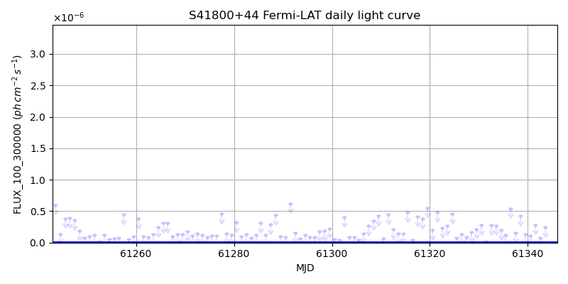
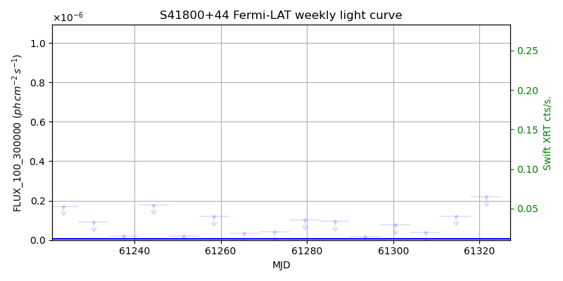
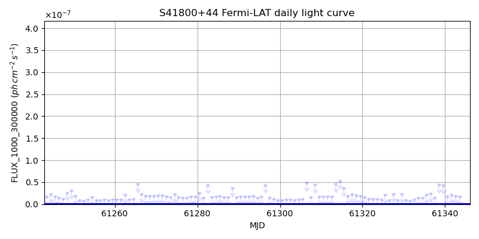
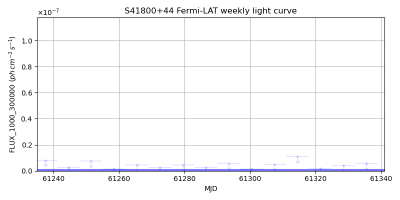

LAT Lightcurve site: https://fermi.gsfc.nasa.gov/ssc/data/access/lat/msl_lc/source/S4_1800p44
NED: Query
Time of last update of this page: UT: 2026-10-31 15:23 (MJD: 61344.641)
| Property | Value |
|---|---|
| R.A. | 18:01:32.40 |
| Dec. | 44:04:22.8 |
| z | 0.663 |
| 3FGL SpectrumType | PowerLaw |
| 3FGL PL Index | 2.70 |
| 3FGL Flux_100_300000 | 2.39e-08 1 / (s cm2) |
| 3FGL Flux_1000_300000 | 4.82e-10 1 / (s cm2) |
| 3FGL Flux >200 GeV | 6.06e-14 1 / (s cm2) |
| 3FGL Extrap. Crab >200 GeV | 0.00 |
| 3FGL Flux After EBL Absorption >200GeV | 5.11e-15 1 / (s cm2) |
| 3FGL EBL Crab Fraction >200GeV | 0.00 |

| MJD | dMJD | Flux | dFlux | Frac3FGL | FracCrab>200GeV | EBLFracCrab>200GeV |
|---|---|---|---|---|---|---|
| 61339.50 | 0.50 | 1.28e-07 | 0.00e+00 | 0.00 | 0.00 | 0.00 |
| 61340.50 | 0.50 | 1.05e-07 | 0.00e+00 | 0.00 | 0.00 | 0.00 |
| 61341.50 | 0.50 | 2.84e-07 | 0.00e+00 | 0.00 | 0.00 | 0.00 |
| 61342.50 | 0.50 | 7.81e-08 | 0.00e+00 | 0.00 | 0.00 | 0.00 |
| 61343.50 | 0.50 | 2.44e-07 | 0.00e+00 | 0.00 | 0.00 | 0.00 |

| MJD | dMJD | Flux | dFlux | Frac3FGL | FracCrab>200GeV | EBLFracCrab>200GeV |
|---|---|---|---|---|---|---|
| 61307.50 | 3.50 | 3.87e-08 | 0.00e+00 | 0.00 | 0.00 | 0.00 |
| 61314.50 | 3.50 | 1.21e-07 | 0.00e+00 | 0.00 | 0.00 | 0.00 |
| 61321.50 | 3.50 | 2.19e-07 | 0.00e+00 | 0.00 | 0.00 | 0.00 |
| 61328.50 | 3.50 | 9.84e-08 | 0.00e+00 | 0.00 | 0.00 | 0.00 |
| 61335.50 | 3.50 | 1.36e-07 | 0.00e+00 | 0.00 | 0.00 | 0.00 |

| MJD | dMJD | Flux | dFlux | Frac3FGL | FracCrab>200GeV | EBLFracCrab>200GeV |
|---|---|---|---|---|---|---|
| 61339.50 | 0.50 | 4.26e-08 | 0.00e+00 | 0.00 | 0.00 | 0.00 |
| 61340.50 | 0.50 | 1.70e-08 | 0.00e+00 | 0.00 | 0.00 | 0.00 |
| 61341.50 | 0.50 | 2.13e-08 | 0.00e+00 | 0.00 | 0.00 | 0.00 |
| 61342.50 | 0.50 | 1.91e-08 | 0.00e+00 | 0.00 | 0.00 | 0.00 |
| 61343.50 | 0.50 | 1.73e-08 | 0.00e+00 | 0.00 | 0.00 | 0.00 |

| MJD | dMJD | Flux | dFlux | Frac3FGL | FracCrab>200GeV | EBLFracCrab>200GeV |
|---|---|---|---|---|---|---|
| 61307.50 | 3.50 | 4.95e-09 | 0.00e+00 | 0.00 | 0.00 | 0.00 |
| 61314.50 | 3.50 | 1.10e-08 | 0.00e+00 | 0.00 | 0.00 | 0.00 |
| 61321.50 | 3.50 | 1.79e-09 | 0.00e+00 | 0.00 | 0.00 | 0.00 |
| 61328.50 | 3.50 | 4.06e-09 | 0.00e+00 | 0.00 | 0.00 | 0.00 |
| 61335.50 | 3.50 | 5.58e-09 | 0.00e+00 | 0.00 | 0.00 | 0.00 |
--------------------------------------------------------- Using user-supplied coords: 18:01:32.40 44:04:22.8 2000 --------------------------------------------------------- FLWO UT night of: 2026-11-01 Local Sid. @ Midnight: 02:18 Sunset (-15.0) (local, UT): 18:43 01:43 Sunrise (-15.0) (local, UT): 05:32 12:32 Moonrise (local, UT): 22:59 05:59 Moonset (local, UT): Moon phase: 0.56 --------------------------------------------------------- AzTime LSID UT Obj_el Obj_az Mn_el Mn_az Sep. --------------------------------------------------------- 18:43 21:00 01:43 53.2 302.7 -34.7 15.7 108.1 19:13 21:30 02:13 47.8 302.4 -32.7 23.2 108.0 19:43 22:01 02:43 42.4 302.9 -30.0 30.3 108.0 20:13 22:31 03:13 37.0 303.9 -26.7 36.8 107.9 20:43 23:01 03:43 31.8 305.4 -22.9 42.8 107.8 21:13 23:31 04:13 26.6 307.2 -18.6 48.2 107.7 21:43 00:01 04:43 21.6 309.4 -14.0 53.1 107.6 22:13 00:31 05:13 16.8 311.9 -9.0 57.6 107.5 22:43 01:01 05:43 12.1 314.7 -2.3 61.8 107.4 23:13 01:31 06:13 7.8 317.9 2.0 65.6 107.3 23:43 02:01 06:43 3.7 321.4 7.5 69.3 107.2 00:13 02:31 07:13 0.2 325.2 13.2 72.7 107.2 00:43 03:01 07:43 -2.4 329.3 19.1 76.1 107.1 01:13 03:31 08:13 -6.8 333.8 25.1 79.4 107.0 01:43 04:02 08:43 -9.4 338.6 31.2 82.8 107.0 02:13 04:32 09:13 -11.5 343.7 37.3 86.3 106.9 02:43 05:02 09:43 -13.0 349.0 43.5 90.0 106.9 03:13 05:32 10:13 -13.9 354.5 49.6 94.2 106.9 03:43 06:02 10:43 -14.2 0.0 55.8 99.1 106.8 04:13 06:32 11:13 -13.9 5.6 61.8 105.2 106.8 04:43 07:02 11:43 -13.0 11.0 67.7 113.6 106.8 05:13 07:32 12:13 -11.5 16.3 73.0 126.5 106.8 05:32 07:51 12:32 -10.3 19.5 75.9 138.4 106.8 --------------------------------------------------------- Dark hours >55 deg.: 0.00